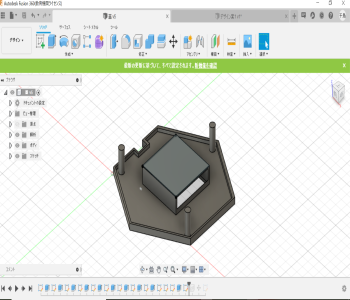
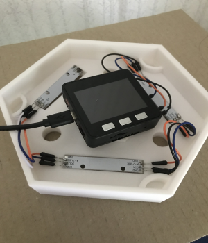
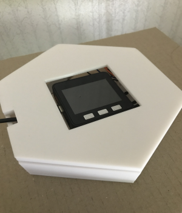

前回の土台の試作品洋の蓋を作る。実は試作品2の段階で蓋をはめる用の穴？を作っておいた。
そこにうまくはめ込めるように作成する。それに加えて、コードを通せるような穴も必要である。
蓋ははめられたのだが、Ｍ5stack用の穴が思ったよりも小さくプリントされたので、大きめに作り直したら少し大きくしすぎた。
 いじっていたら四角い部分が取れてしまった...
光の色の割合について再度調べた。資料を見てみると赤：青＝4：1もしくは3：1ぐらいの割合が良いとされている。また、資料3によると赤と青を同時にあてるのではなく、時間で交互に充てるのが効果的という結果もある。商品を見たところ、だいたい4：1や3:1や5:2ぐらいのものもあった。商品3には白い光もある。
アクリルの筒や塩ビの筒が使えるのではないかと思った。商品サイト